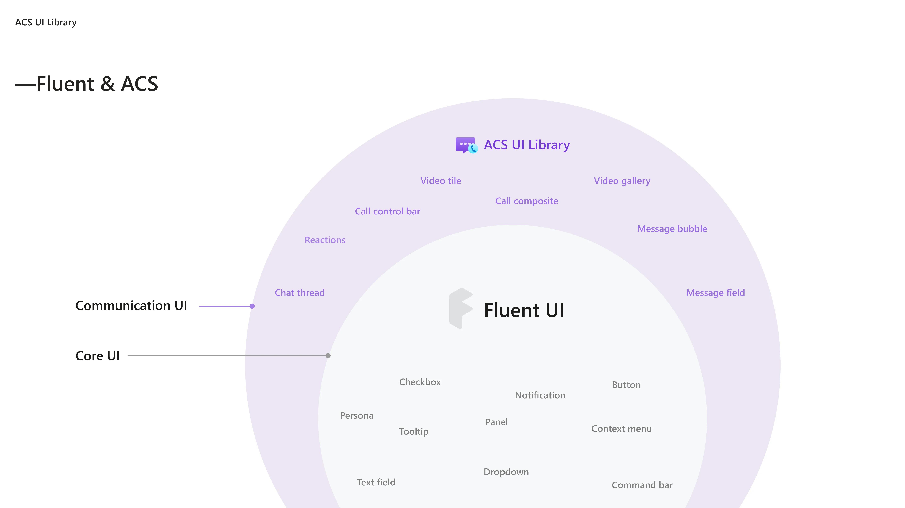
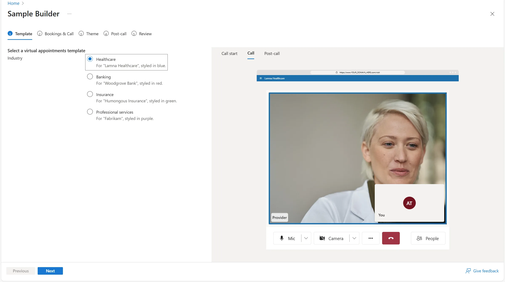
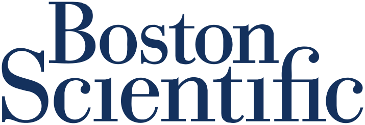
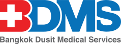
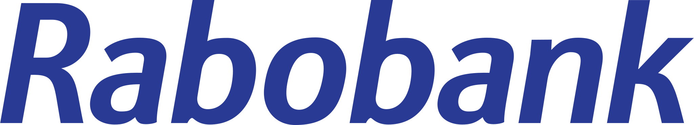
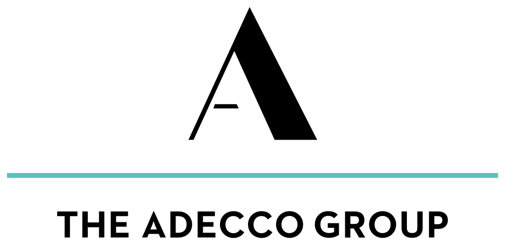
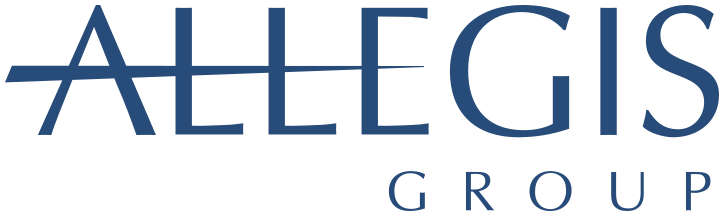
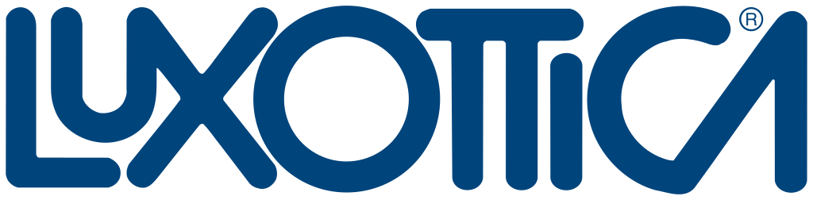

ACS UI Library
- Organization
- Microsoft
Azure Communication Services - Role
- Product lead and designer
Web, iOS, Android - Collaborators
- Alex Pereira
Jessica Downey
Danielle Hibbs
20+ engineers - Duration
- 2022 – Present
The ACS UI Library is the interface layer for Azure Communication Services: an open-source SDK of prebuilt voice, video, and chat experiences, built on top of the Calling, Chat, and Rooms SDKs. It carries 11.1M+ monthly minutes and ships inside 200+ businesses.
I own the roadmap and the customer conversations for the same features I design. 40+ have shipped with a team of 20+ engineers.
Everything here is designed through defaults. Developers adopt the library; their patients, customers, and agents just get whatever we shipped, without ever choosing it. So one control bar has to hold up in a telehealth appointment and in a contact center, and still bend far enough that a team can make it theirs.
Opportunity
Every product needs a call in it now, and almost none of them can afford to build one.
Healthcare, finance, automotive, retail: the products in all of them started needing voice and video inside the thing the customer was already using, not in a separate app. Building that in-house runs to months, and the parts that take longest are the ones nobody notices until they fail. Device permissions. A dropped network. A screen reader that finds nothing to read.
Those last ones set the size of the prize. Accessibility is the hardest thing for a small team to get right, and it stopped being optional on a date: under the European Accessibility Act, real-time text became a requirement for voice and video platforms serving Europe from June 30, 2025. Every customer needed it, and almost none of them were going to build it themselves.
For Azure it compounds. Every app built on the library is an app running on the platform, so this is not a convenience feature sitting next to the SDKs. It is how the platform gets adopted.
All of which is worth exactly as much as the number of developers who reach for it. For much of the time I owned it, they were not reaching often enough, so I set out to find out why.

Role
What I did
Six threads, run in parallel across three platforms.
- Interaction design
- Set the models end to end: RTT panel behavior, call summary hierarchy, control bar overflow, pre-call device setup.
- Visual design direction
- Set the visual direction on every feature, down to the opacity model for RTT text states and component density on each platform.
- Design strategy and roadmap
- Decided what got designed and when, against accessibility deadlines, adoption gaps, and the platform's move toward AI.
- Customer research
- Interviewed Teladoc, CVS, OP Bank and others to find what was blocking adoption, then turned that into design priorities.
- Cross-platform leadership
- Led design across web, iOS, and Android at once, so one interaction model held steady across three engineering teams.
- Accessibility
- Drove the first Real-Time Text implementation at Microsoft, scoped for the European Accessibility Act deadline.
System
One system, many levels of control.
The library is built in two tiers. Composites are turn-key experiences for common scenarios, packaged to drop straight into an app. Components are the building blocks beneath them, for teams that need custom layouts or their own behavior. Accessibility and localization run across both.
Three axes decide where a team lands: identity, meaning bring your own or use Microsoft 365 identity to reach Teams resources; platform, meaning web and native; and look and feel. The headline I wrote for it: build the exact user experience you want.
Documentation was itself a design decision. Component docs need to be visual and interactive, so we built on Storybook, where a developer can try a component with their own IDs before writing a line of code.
CompositesTurn-key experiences
Full call and chat experiences for common scenarios — CallComposite, ChatComposite, and CallWithChatComposite — packaged to drop straight into an app.
You control branding, layout presets, limited behavior overrides
ComponentsBuilding blocks
The modular pieces beneath the composites, for teams that need their own layout, their own features, or deeper customization.
You control custom layout, styling, behavior, full observability
Core SDKsLow-level access
The headless Calling, Chat, and Rooms SDKs underneath everything. Build the interface from nothing when the prebuilt tiers aren’t enough.
You control everything, and you own the whole build
Built on Fluent
The library is a communication layer over Fluent rather than a design system of its own. Buttons, panels, personas and menus come from Fluent; what sits in the ring around it is everything a call needs and a form does not: the video tile, the gallery, the control bar, the message thread.
That is what makes one theme provider enough. A team that already themes Fluent gets the call themed with it.

The full experience, live
The composite tier: a whole call in one drop, running in the page. Turn your camera on and you are in it.
The pieces, one at a time
Or assemble the same experience yourself, from the pieces underneath it. Each one runs live here rather than being screenshotted, and where a component has props worth seeing, the frame lets you switch them.
VideoGallery
The grid, the overflow row and the local tile. The Calling SDK renders four remote video streams at a time, so the design problem is not how to lay out a room — it is who those four are. Dominant speaker tracking decides, up to six speakers deep, and everyone else drops to the overflow row with their audio intact. Six layouts ship on top of that; switch between them here.
ControlBar
Ten presets: horizontal and vertical, docked to any edge, or floating over the stage. A product embedding a call rarely gets the whole window, so the bar has to survive being put somewhere its designer didn’t choose — the floating variants carry their own background and shadow, and flip for right-to-left layouts.
MessageThread
Grouping, timestamps, receipts and system messages. Dates and read receipts are both off by default: a support thread wants them, a quick in-call chat doesn’t, and the quieter default is the one a developer can ship without thinking about it. Consecutive messages from one person collapse under a single name.
SendBox + TypingIndicator
The composer and the presence line under it. Messages cap at 8,000 characters, and the indicator gets a 35-character budget for names — past that it counts the rest (“Claire and 3 others are typing”) rather than letting one long display name push the line off the screen. Type in it.
ParticipantList
The roster, its indicators, and the per-person menu. Mute and video state sit on the row itself; the menu holds only the actions that reach into someone else’s call, and it appears on a row at all only when the app has granted that permission — so the same component serves a peer meeting and a moderated one without a second variant.
Device selection
Split buttons and DevicesButton, running on your real devices. Turning the camera on stays one click; choosing which camera lives in the chevron beside it. The menu adapts to the platform underneath — browsers that won’t enumerate speakers get microphone selection alone, with their own labels and tooltips, rather than a control that lies about what it can do.
RealTimeText
Character-by-character text for callers who can’t use voice, in the main stage rather than a side panel. Once anyone starts it, RTT is on for everyone for the rest of the call and can’t be switched off.
Customization and brand
What the whole ladder is in service of: a team taking it somewhere that looks like them, without rebuilding it. Theming runs through a single Fluent provider, so a team can take it anywhere its palette still passes the accessibility checker.

Sample Builder
The shortest version of that. Five steps — template, bookings, theme, post-call, review — and it ends on Deploy to Azure, Download .zip, or Clone to GitHub. A team that has not written a line yet leaves with a branded, working app.

Some of the first public AI tooling in ACS shipped here. Transcription and call summaries went out through the Sample Builder, so a team could try them without writing code and leave with a working implementation to build on — the same no-code path that had been carrying the rest of the library.
Outcome
It found its audience and grew fast.
As the platform evolved, this stayed one of the clearest examples in ACS of a system that met developers where they were. By the time it matured, they were using it to add voice, video, and chat to their apps in days.
The accessibility work is the part that compounds. Every composite ships WCAG 2.1 AA, and RTT shipped ahead of the European Accessibility Act deadline — so the teams building on it inherited both rather than retrofitting them under a deadline of their own.
11.1M+
Monthly minutes by the end of 2025, up from roughly 2M at the start of the year
200+
Businesses onboarded across healthcare, finance, automotive, and retail
40+
Features owned end to end, from first Figma frame to public release








